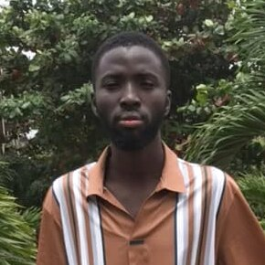

Kone Abdoul Koudouss
Cofondateur · Directeur général et responsable pédagogique
Titulaire d’un BTS en sciences agronomiques de l’Institut International des Affaires en Entrepreneuriat (2IAE) et d’un niveau Licence 2 en droit à l’Université Félix Houphouët-Boigny, Kone Abdoul Koudouss a enseigné en établissement scolaire et développé une solide expérience en gestion. Directeur général de KONE.EDUC, il définit la stratégie de l’entreprise et veille à la qualité pédagogique : sélection, accompagnement et suivi des enseignants.
« Les enseignants qualifiés méritent un cadre sérieux pour transmettre leur savoir, et le numérique doit être mis au service de la réussite scolaire en Côte d’Ivoire. »